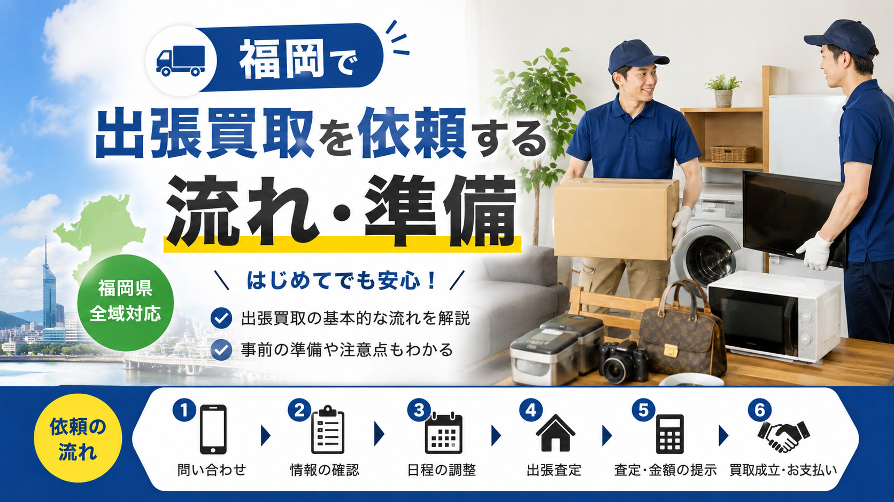

PICKUP FLOW / FUKUOKA
福岡で家具・家電・ブランド品などを売りたいけれど、初めての出張買取で何を準備すればよいか分からない方向けの実用ガイド。申込から査定・搬出までの基本的な流れと、事前に整えておきたい品物情報・写真・付属品・搬出経路・本人確認書類まで、当日スムーズに進めるためのチェックポイントをまとめました。

福岡で家具・家電・日用品・ブランド品などをまとめて売りたい場合、店舗へ持ち込むよりも出張買取を利用した方が便利なケースがあります。
特に、冷蔵庫・洗濯機・大型テレビ・食器棚・ソファ・ベッド・エアコンなど、自分で運ぶのが難しい品物がある場合は、出張買取のメリットが大きくなります。
福岡市内はもちろん、春日市、大野城市、糟屋郡、筑紫野市、太宰府市、久留米市、北九州市など、対応エリア内であれば自宅まで査定に来てもらえる業者も多くあります。
ただし、出張買取は「申し込めば何でも高く売れる」というサービスではありません。品物の状態、年式、需要、搬出条件、地域、業者の得意ジャンルによって査定額や対応可否が変わります。
この記事では、福岡で出張買取を依頼する流れと、査定前に準備しておきたいポイントをわかりやすく解説します。
福岡で出張買取を利用する場合、一般的な流れは次のようになります。
業者によって多少の違いはありますが、大きな流れはほとんど同じです。
出張買取では、問い合わせ時にある程度の情報を伝えておくことで、当日の査定がスムーズになります。特に大型家具や家電の場合は、事前情報が不足していると、当日に買取不可となることもあります。
出張買取を依頼する前に、まずは売りたい品物を整理しましょう。福岡の出張買取でよく依頼される品物には、次のようなものがあります。
引越しや家の片付けの場合、「何が売れるかわからない」という状態でも問題ありません。まずは売れそうなものをまとめてリストアップしておくと、業者に相談しやすくなります。
ただし、破損が大きい家具、古すぎる家電、汚れや臭いが強いもの、需要が低い大型家具などは、買取対象外になることもあります。
福岡で家電の出張買取を依頼する場合、年式の確認はとても重要です。冷蔵庫、洗濯機、テレビ、電子レンジ、エアコンなどの家電は、製造年によって買取可否が大きく変わります。
一般的には、製造から5年以内の家電は買取対象になりやすく、7年以上経過しているものは査定が厳しくなる傾向があります。
特に大型家電は、再販売時の需要や保証リスクがあるため、年式が古いと無料引き取りや有料回収になる場合もあります。
製造年の確認場所：多くの場合、本体側面・背面・ドア内側・ラベル部分に記載されています。問い合わせ前に確認しておくと、査定の目安を聞きやすくなります。
出張買取の問い合わせ時には、品物の情報をできるだけ具体的に伝えることが大切です。特に家電や家具の場合、以下の情報をメモしておくとスムーズです。
たとえば、冷蔵庫であれば「メーカー、容量、製造年」、洗濯機であれば「メーカー、容量、縦型かドラム式か、製造年」が重要です。家具の場合は、ブランド家具かどうか、サイズ、素材、状態、搬出しやすさなどが査定に影響します。
情報が曖昧なまま依頼すると、業者側も正確な判断ができず、当日の査定額が想定より低くなる可能性があります。
最近では、LINE査定やメール査定に対応している出張買取業者も増えています。福岡で出張買取を依頼する場合も、事前に写真を送ることで、おおよその査定可否や買取目安を確認できることがあります。
撮影しておきたい写真は以下の通りです。
特に大型家具や大型家電の場合、写真があると業者側も判断しやすくなります。「これは売れるのか」「出張で来てもらえるのか」が不安な場合は、事前に写真を送って確認するのがおすすめです。
査定額を少しでも上げたい場合は、付属品をそろえておきましょう。家電の場合は、以下のような付属品があると査定で有利になることがあります。
テレビのリモコン、エアコンのリモコン、掃除機のノズル、電子レンジの角皿、炊飯器の内釜など、欠品があると査定額が下がる場合があります。
ブランド品や時計の場合は、箱、保証書、ギャランティカード、保存袋などがあるとプラス査定につながりやすくなります。
出張買取前には、品物を軽く掃除しておくことも大切です。査定では、品物の状態が重視されます。ほこり、汚れ、油汚れ、カビ、臭いなどが目立つと、査定額が下がったり、買取不可になったりすることがあります。
特に以下の品物は、見た目の清潔感が重要です。
ただし、無理に分解したり、強い洗剤で傷めたりする必要はありません。表面のほこりを拭く、庫内を軽く掃除する、付属品をまとめる程度でも印象は変わります。
大型家具や大型家電の出張買取では、搬出経路の確認も重要です。福岡市内のマンションやアパートでは、エレベーターの有無、階段の幅、玄関の広さ、駐車スペースの有無によって、搬出のしやすさが変わります。
事前に確認しておきたいポイントは以下です。
特に大型冷蔵庫、ドラム式洗濯機、食器棚、ソファ、ベッド、エアコンなどは、搬出条件によって対応可否が変わることがあります。
業者に問い合わせる際は、「マンションの何階か」「エレベーターの有無」「駐車スペースの有無」を伝えておくと安心です。
出張買取を依頼する前に、費用の有無を必ず確認しましょう。業者によっては、出張費無料、査定無料、キャンセル無料としているところもあります。一方で、エリアや品物の内容によっては出張費がかかる場合もあります。
確認しておきたい項目は以下です。
特に、買取対象外の品物が多い場合や、処分目的で依頼する場合は注意が必要です。
注意：「無料で見に行きます」と言われても、当日に有料回収を提案されるケースもあります。事前に料金体系を確認しておくことで、トラブルを避けやすくなります。
福岡には、出張買取に対応しているリサイクルショップや買取専門業者が複数あります。業者によって得意ジャンルが異なるため、同じ品物でも査定額に差が出ることがあります。
たとえば、家具に強い業者、家電に強い業者、ブランド品に強い業者、オフィス用品に強い業者、遺品整理や家一軒まるごとの買取に強い業者などがあります。
高く売りたい場合は、1社だけで決めず、複数業者に相談して比較するのがおすすめです。特に以下のような場合は、相見積もりを取る価値があります。
複数社に相談することで、買取価格だけでなく、対応の丁寧さや搬出の安心感も比較できます。
福岡で引越しに合わせて出張買取を利用する場合は、早めの依頼がおすすめです。
引越しシーズンである2月、3月、4月は、出張買取業者の予約が混み合いやすくなります。特に福岡市内や学生・転勤者が多いエリアでは、希望日時に予約が取れないこともあります。
引越し直前に依頼すると、買取不可だった場合に処分の時間が足りなくなる可能性があります。理想は、引越し日の2週間から1ヶ月前に一度相談しておくことです。
早めに査定を受けておけば、売れるもの、処分が必要なもの、別の方法で手放すものを分けて準備できます。
出張買取で買取が成立する場合、本人確認書類が必要になります。これは古物営業法に基づく確認であり、ほとんどの買取業者で必須です。
一般的に利用できる本人確認書類には、以下のようなものがあります。
本人確認書類がないと、査定額に納得しても買取手続きができない場合があります。当日はすぐに提示できるように準備しておきましょう。
出張買取では、査定額に納得できない場合、無理に売る必要はありません。
特に、事前の想定より査定額が低かった場合や、有料回収を提案された場合は、その場で判断せずに一度持ち帰って考えることも大切です。
信頼できる業者であれば、査定額の理由をきちんと説明してくれます。たとえば、以下のような説明があると納得しやすいでしょう。
逆に、説明が曖昧なまま契約を急がせる業者には注意が必要です。
福岡で出張買取を依頼する際は、以下の点に注意しましょう。
まず、すべての品物が買取対象になるわけではありません。状態が悪いもの、古い家電、需要が低い家具、大型で再販売しにくいものは、買取不可になることがあります。
次に、出張対応エリアを確認しましょう。福岡市内は対応していても、遠方エリアでは出張条件が異なる場合があります。
また、買取価格だけでなく、対応の丁寧さ、説明のわかりやすさ、搬出作業の安心感も大切です。
特にマンションや戸建てから大型品を搬出する場合、壁や床を傷つけないように作業してくれるかどうかも確認しておきたいポイントです。
出張買取は、次のような人に向いています。
特に「家まるごと」「部屋まるごと」の片付けでは、出張買取の利便性が高くなります。売れるものを査定してもらい、売れないものについても処分方法を相談できる業者であれば、片付け全体がスムーズに進みます。
一方で、出張買取に向いていないケースもあります。
たとえば、売りたい品物が少量で、かつ低単価のものだけの場合、業者が出張対応できないことがあります。また、古い家具や状態の悪い家電だけの場合、買取ではなく回収扱いになる可能性があります。
以下のような場合は、店舗持ち込み、自治体の粗大ごみ、不用品回収、フリマアプリなども検討しましょう。
出張買取は便利ですが、すべての不用品処分に最適というわけではありません。品物の内容に合わせて使い分けることが大切です。
福岡で出張買取を依頼する場合、事前準備をしておくことで査定がスムーズになり、トラブルも避けやすくなります。
特に、家電の年式確認、型番・メーカーのメモ、写真の準備、付属品の確認、搬出経路の確認は重要です。
出張買取は、大型家具や大型家電を売りたい人、引越し前に不用品を整理したい人、家まるごと片付けたい人にとって便利なサービスです。
ただし、業者によって得意ジャンルや査定基準は異なります。高く、安心して売りたい場合は、複数の業者に相談し、査定額だけでなく対応の丁寧さも比較しましょう。
福岡で出張買取を上手に活用すれば、自宅にいながら不用品を整理でき、引越しや片付けの負担を大きく減らすことができます。